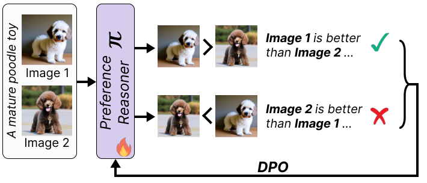
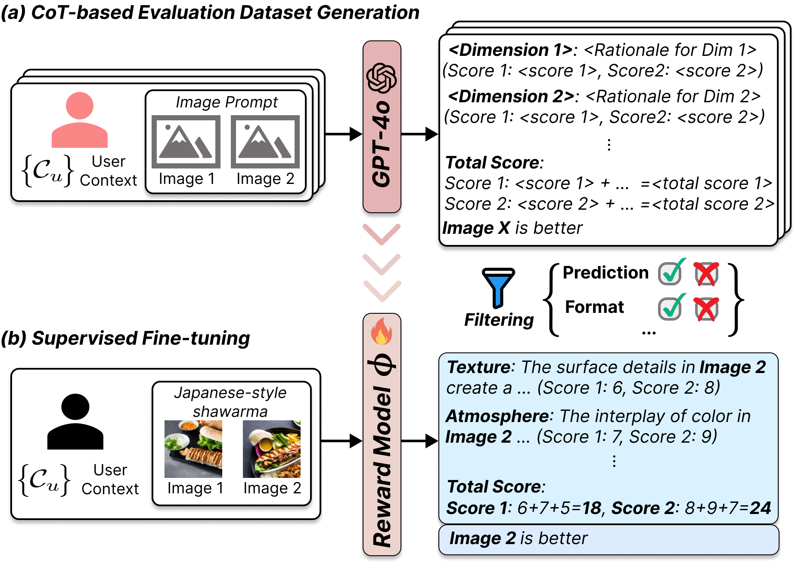
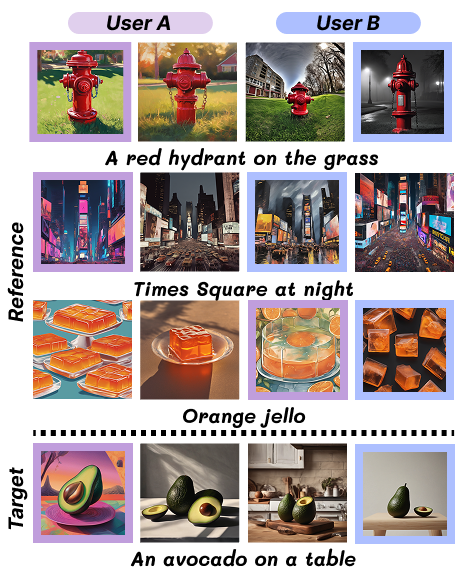
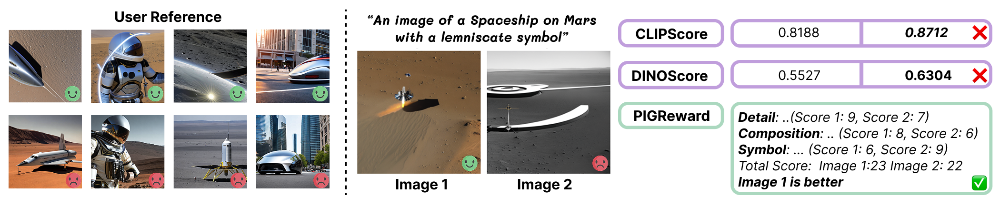
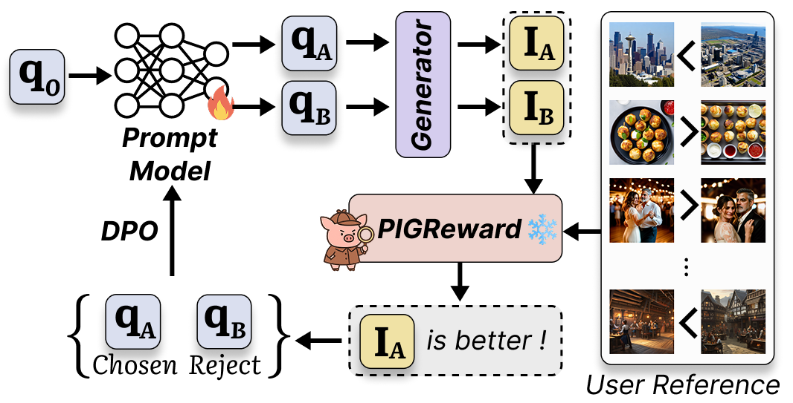
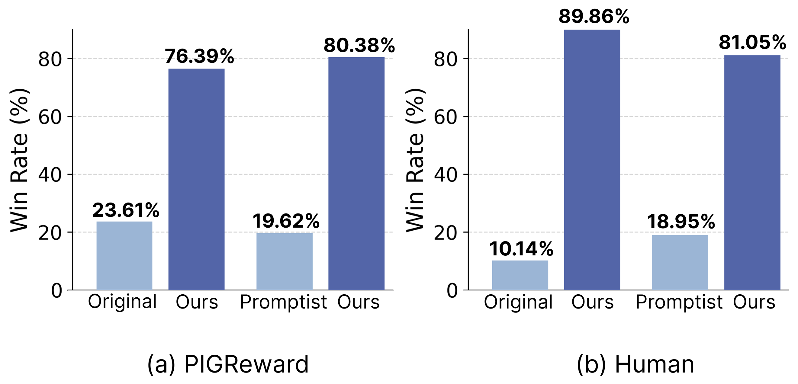
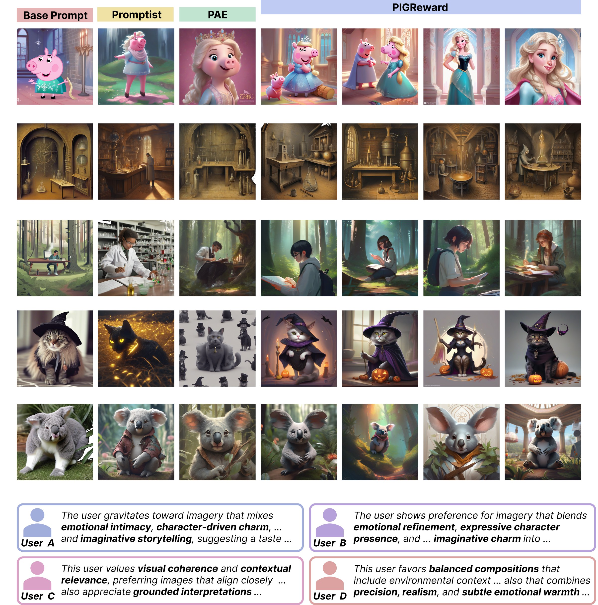

Recent text-to-image models generate semantically coherent images from textual prompts, yet evaluating how well they align with individual user preferences remains an open challenge. Conventional evaluation methods, including general reward functions and similarity-based metrics, fail to capture the diversity and complexity of personal visual tastes.
We present PIGReward, a personalized reward modeling framework that dynamically generates user-conditioned evaluation dimensions and assesses images through structured chain-of-thought reasoning. PIGReward uses self-bootstrapping over limited reference data to construct rich user contexts, enabling personalization without user-specific training. Beyond evaluation, PIGReward provides personalized feedback for prompt optimization, improving alignment between generated images and individual intent.
PIGReward decomposes personalized evaluation into two learned components. A preference reasoner π converts each user reference pair into an explicit natural-language rationale. A reward model φ then induces user-specific evaluation dimensions from those rationales and performs dimension-wise comparison for a target image pair.
The preference reasoner learns to produce faithful rationales by contrasting correct and incorrect explanations for the same image pair.

The reward model is distilled from filtered chain-of-thought evaluation trajectories, learning to score image pairs with user-conditioned dimensions.


We introduce PIGBench, a user-study benchmark for realistic personalized text-to-image evaluation. Each instance contains a user-specific ranking of four SDXL-generated images from one abstract prompt.
PIGBench is built from 100 curated image sets and 75 user records, with reference lengths varying from 5 to 15 examples to test personalization under sparse feedback.
PIGReward consistently outperforms conventional reward models, LVLM-based judges, and reference-conditioned baselines across personalized T2I evaluation benchmarks.
| Method | Pick-a-Pic | PIP | PASTA | PIGBench |
|---|---|---|---|---|
| UnifiedReward-Think | 59.92 | 35.28 | 65.71 | 66.04 |
| Qwen2.5-VL-7B w/ reference | 61.52 | 49.95 | 50.34 | 54.72 |
| GPT-4o w/ reference | 46.90 | 76.23 | 68.80 | 64.15 |
| PIGReward | 63.76 | 77.84 | 75.43 | 84.91 |
Accuracy with tie is shown for each benchmark.
Similarity metrics can overfit to surface resemblance between the target image and prior liked images. PIGReward instead infers the user's underlying evaluative criteria, such as detail, composition, symbolism, or realism, and applies them to the target pair.



When used as a user-conditioned reward function, PIGReward provides preference feedback for prompt model training. The optimized prompts produce images that align more closely with individual visual preferences than generic prompt optimization.

@article{lee2025personalized,
title={Personalized Reward Modeling for Text-to-Image Generation},
author={Lee, Jeongeun and Heo, Ryang and Lee, Dongha},
journal={arXiv preprint arXiv:2511.19458},
year={2025}
}